Ringkasnya
- Buka pautan borang. Semak tarikh, lori dan nama anda.
- Di setiap kedai: dapatkan tandatangan dan cop, kemudian ambil foto setiap invois (1 invois = 1 foto).
- Isi pallet jika ada, kemudian tekan Simpan.
- Tunggu sehingga kedai bertanda Dihantar.
- Tidak dapat hantar? Tekan Masalah.
1Buka borang
Buka pautan cawangan anda:
Buka borang Mentakabclfproject01.github.io/clf-transport-forms/CLF_POD_Form.html Buka borang Kuantanclfproject01.github.io/clf-transport-forms/CLF_POD_Form.html?branch=KTNPautan Kuantan berakhir dengan ?branch=KTN. Simpan pautan anda (bookmark) supaya senang dibuka setiap hari.
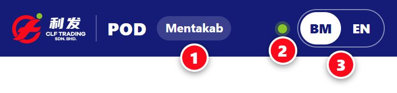
- Nama cawangan. Mesti cawangan anda. Jika tertulis cawangan lain, anda buka pautan yang salah.
- Titik hijau = ada internet. Titik kelabu = tiada internet, atau senarai di skrin ialah salinan lama dalam telefon (lihat bahagian 4).
- BM EN untuk tukar bahasa. Telefon ingat pilihan anda.
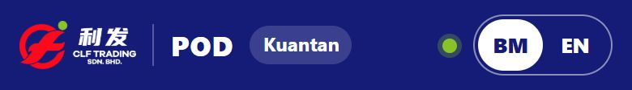
2Lori, pemandu dan tarikh
Kotak Maklumat perjalanan berada di atas sekali. Kali pertama, kotak ini terbuka dan kosong.
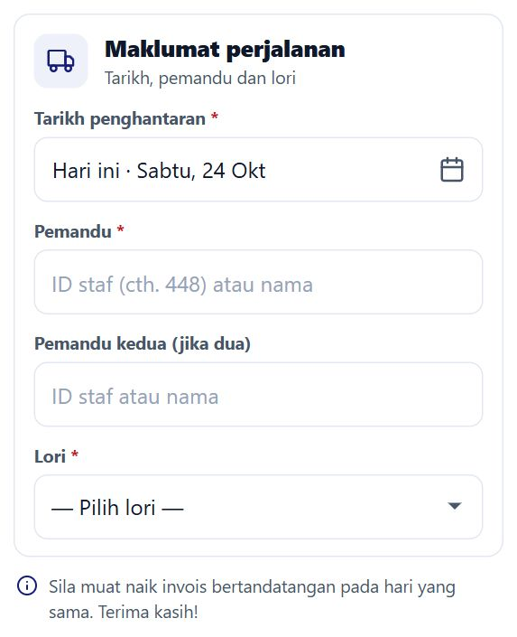
- Lori: pilih nombor lori anda dahulu. Senarai kedai hari ini akan keluar di bawah. Kotak Pemandu tertulis Mencari pemandu… sekejap.
- Pemandu: nama mungkin terisi sendiri: pemandu yang pejabat tetapkan untuk lori itu, atau nama yang telefon ingat. Semak betul atau tidak. Jika kosong atau salah, taip ID staf anda (contoh
901) atau nama anda, kemudian tekan nama anda dalam senarai. - Pemandu kedua (jika ada): isi hanya jika dua orang dalam lori. Jika seorang, biarkan kosong. Jangan pilih nama yang sama dua kali.
- Tarikh penghantaran: sudah diisi dengan tarikh hari ini (tertulis Hari ini). Biasanya tidak perlu diubah. Tarikh esok tidak boleh dipilih.
Tukar lori = semak nama semula. Setiap kali lori ditukar, kotak pemandu dikosongkan dan nama dicari semula untuk lori baharu. Pastikan nama yang keluar ialah nama anda.
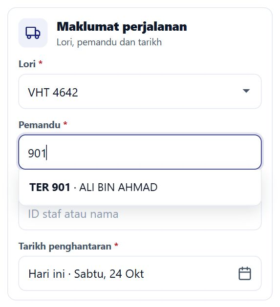
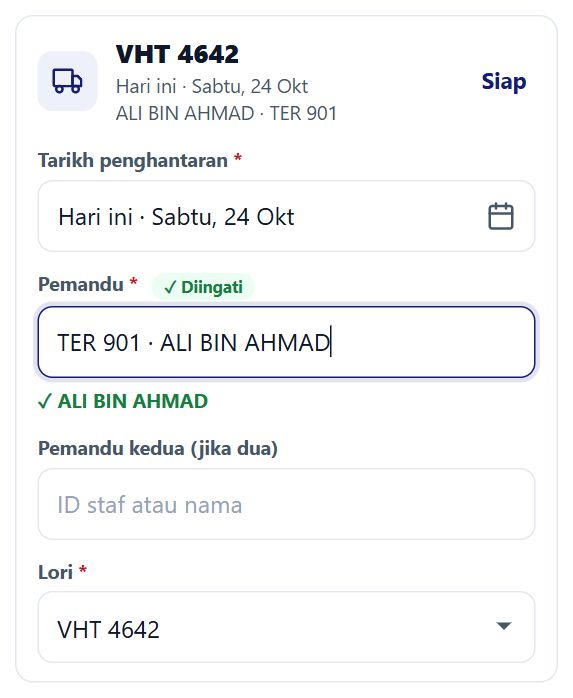
Telefon ingat nama dan lori anda. Esok, semuanya sudah terisi. Semak sahaja, kemudian terus ke senarai.
Kotak dilipat jadi 3 baris
Bila tarikh, lori dan nama sudah lengkap, kotak dilipat jadi 3 baris: lori, tarikh, nama. Tekan Ubah untuk buka semula. Tekan Siap untuk lipat semula. Tiada apa yang terpadam.
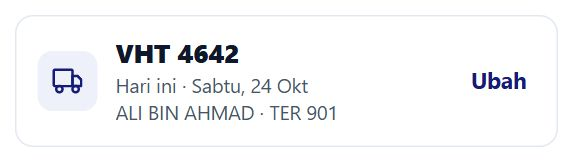
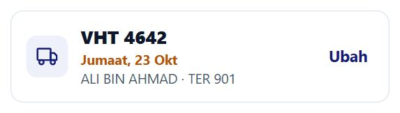
Lupa pilih nama?
Borang tidak akan simpan tanpa nama pemandu (penghantaran itu tidak dikira untuk sesiapa). Bila anda tekan Simpan, kotak ini terbuka sendiri di bahagian Pemandu, dengan tulisan merah Sila pilih nama anda. Pilih nama anda, kemudian tekan Simpan semula. Foto anda tidak hilang.
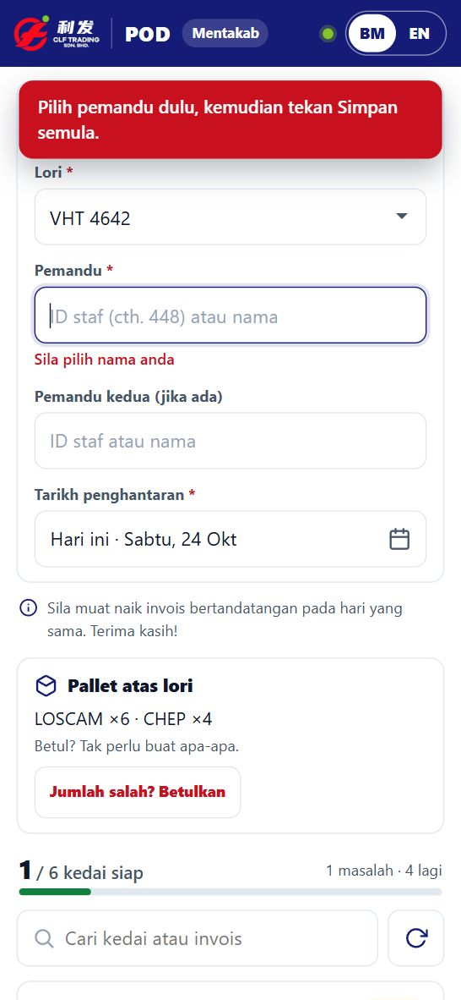
3Pallet atas lori
Kotak Pallet atas lori menunjukkan pallet yang stor naikkan ke lori anda.
- Jumlah betul: tak perlu buat apa-apa.
- Jumlah salah: tekan Jumlah salah? Betulkan, tukar nombor kepada jumlah yang anda terima, kemudian tekan Hantar jumlah sebenar.
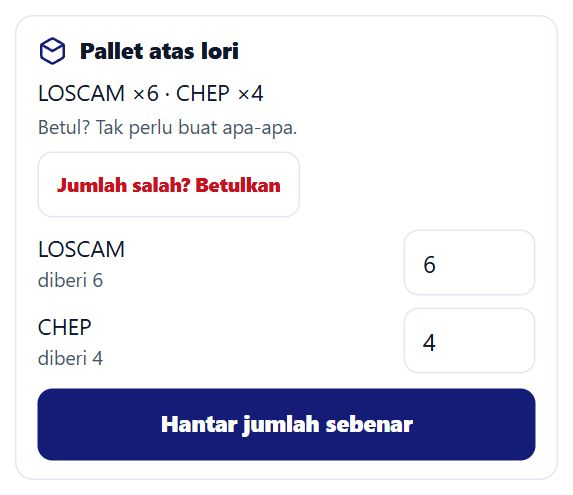
4Senarai penghantaran
Selepas lori dipilih, senarai kedai hari ini keluar. Senarai ini datang dari pejabat.
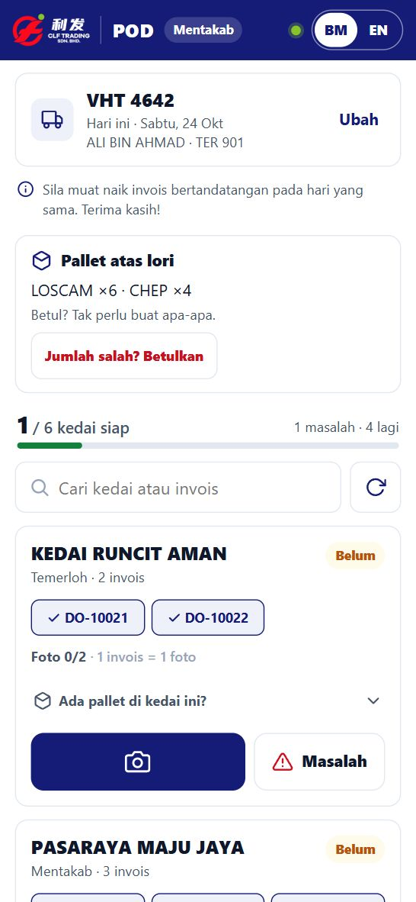
- 1 / 6 kedai siap: berapa kedai sudah selesai. Di kanan: berapa kedai masalah dan berapa kedai lagi.
- Cari kedai atau invois: taip nama kedai, kawasan atau nombor invois.
- ↻ (Muat semula senarai): ambil senarai terbaru dari pejabat. Senarai juga dikemas kini sendiri setiap kali anda kembali ke borang.
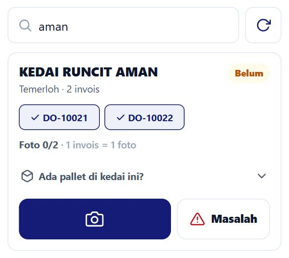
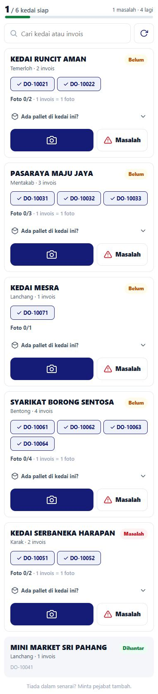
Susunan: kedai yang belum siap di atas, kedai yang ada masalah selepas itu, kedai yang sudah dihantar (kelabu) di bawah sekali. Label setiap kedai:
- Belum = belum selesai
- Dihantar = sudah selesai
- Masalah atau sebabnya, contoh Kedai tutup = tidak dapat hantar
Salinan luar talian
Tiada internet? Borang menunjukkan senarai yang disimpan dalam telefon. Titik di atas jadi kelabu dan ada nota Salinan luar talian, belum disegerak. Anda boleh terus bekerja. Bila ada liputan, tekan ↻.
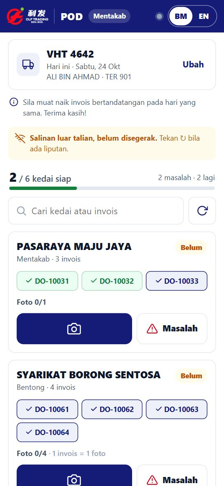
Kedai tiada dalam senarai? Minta pejabat tambah. Jangan hantar dengan cara lain.
5Di setiap kedai: ambil foto invois
Tandatangan dan cop dahulu. Pastikan pelanggan sudah tandatangan dan cop invois sebelum anda ambil foto.
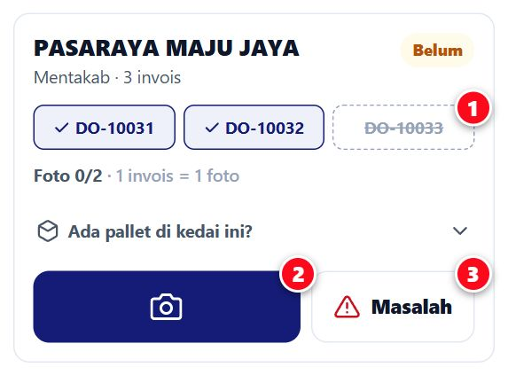
- Nombor invois. Semua bertanda ✓ = semua dihantar. Ada invois yang tidak dihantar? Tekan nombornya: tanda ✓ hilang dan nombor bergaris. Tekan sekali lagi untuk tanda semula.
- Butang kamera (biru besar): buka kamera.
- Masalah: tidak dapat hantar (lihat bahagian 9).
Foto 0/2 bermaksud: 0 foto sudah diambil, 2 foto diperlukan. 1 invois = 1 foto.
Buang tanda ✓ invois yang tidak dihantar sejurus sebelum ambil foto, dan semak nombor Foto 0/2. Bila senarai dikemas kini (contoh selepas Simpan kedai lain), tanda ✓ boleh muncul semula.
Kamera borang
- Tekan butang kamera. Kamera borang dibuka dengan bingkai A4.
- Gambar invois contoh yang pudar muncul sekejap dalam bingkai, kemudian hilang. Itu hanya contoh, bukan invois anda.
- Letak invois sebenar rata (di atas paha atau papan). Seluruh muka surat dalam bingkai. Satu invois sahaja.
- Pegang telefon stabil. Bingkai jadi hijau dan tertulis Tahan… Kamera mengambil gambar sendiri, kemudian skrin Semak imbasan keluar.
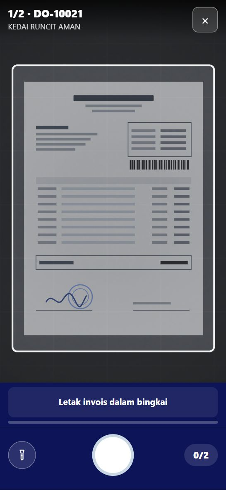
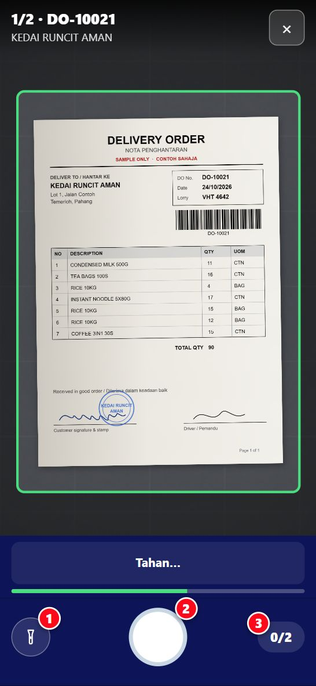
- Lampu suluh. Tekan jika gelap. (Hanya pada telefon yang ada lampu.)
- Butang bulat. Tekan untuk ambil gambar sendiri jika kamera lambat. Butang ini berdenyut jika lama tiada gambar.
- Kiraan foto: sudah diambil / diperlukan.
Di atas skrin: nombor foto, nombor invois dan nama kedai. Butang × menutup kamera. Foto yang sudah diambil tidak hilang.
Kamera juga memberi arahan, contoh: Terlalu gelap, perlu cahaya, Terlalu terang atau silau, Masukkan seluruh invois dalam bingkai, Dekat sikit dan pegang stabil. Ikut arahan itu.
Semak imbasan
Selepas gambar diambil, borang menunjukkan hasilnya: bersih seperti salinan imbasan (scan).
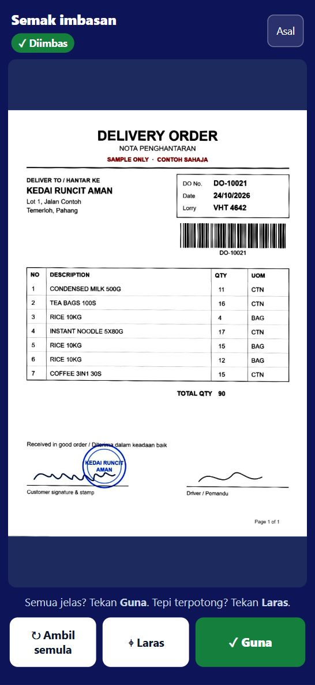
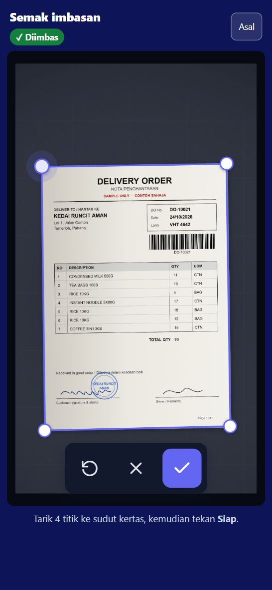
- ✓ Guna: imbasan jelas, simpan foto ini.
- ↻ Ambil semula: ambil gambar invois yang sama sekali lagi.
- Laras: ada tepi terpotong? Tarik 4 titik ke sudut kertas, kemudian tekan ✓ (Siap).
- Asal: lihat foto asal sebelum imbasan.
Label di atas: ✓ Diimbas = baik. ✓ Diratakan = kertas yang bengkok sudah diratakan sendiri, juga baik. ⚠ Semak tepi atau ⚠ Tepi tidak dikesan = semak betul-betul, tekan Laras atau Ambil semula.
Invois seterusnya
Selepas ✓ Guna, letak invois seterusnya. Tulisan Letak invois SETERUSNYA dalam bingkai bermaksud kamera masih nampak invois tadi. Tukar kertas.
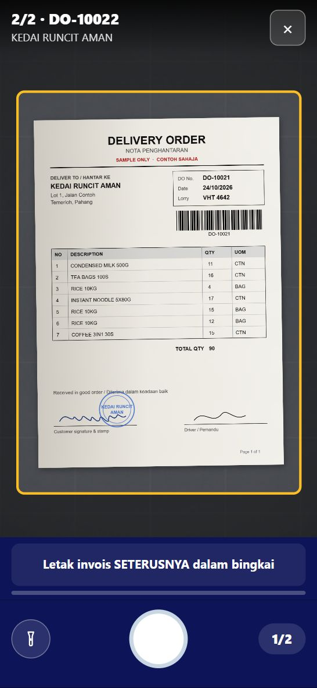
Bila semua foto siap, kamera tutup sendiri: Semua foto siap ✓ Tekan Simpan.
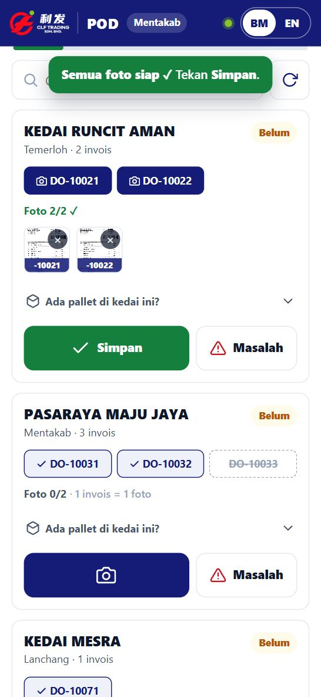
- Tersalah foto? Tekan × pada gambar kecil untuk buang, kemudian ambil semula.
- Tekan gambar kecil untuk lihat besar.
Foto tidak jelas
Jika gambar kabur, terlalu gelap atau terpotong, kamera tulis Tidak jelas: … dan minta ambil semula. Selepas 3 kali, butang Hantar juga keluar. Guna hanya jika invois memang sukar difoto (contoh kertas berkilat). Foto itu ditanda ! untuk pejabat.
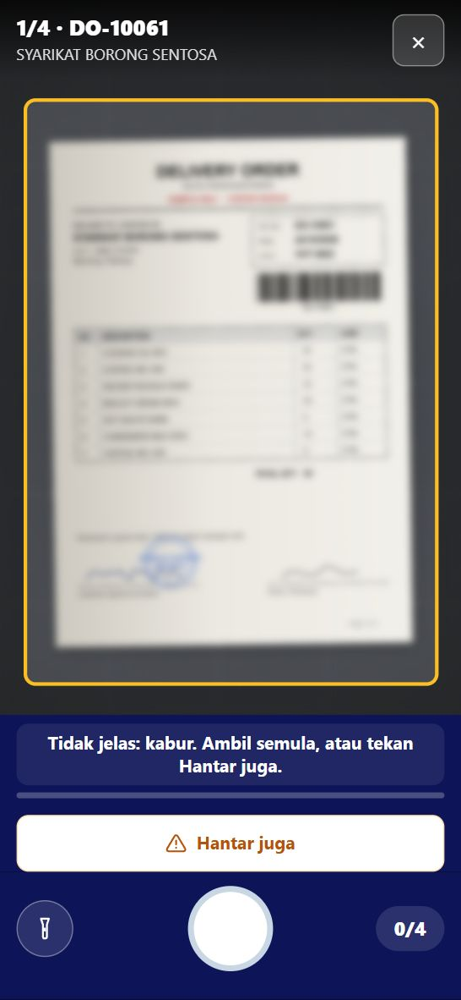
6Kod bar invois BAHARU
Setiap invois CLF ada kod bar. Kamera membaca kod bar itu, jadi borang tahu foto itu untuk invois mana.
- Susunan foto tidak penting lagi. Ambil foto ikut mana-mana susunan.
- Pastikan kod bar nampak jelas dalam foto. Jangan tutup dengan jari. Jangan lipat kertas di situ.
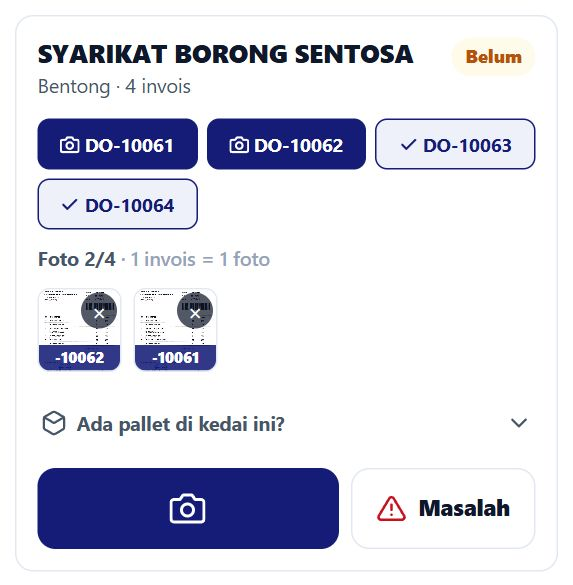
- Selepas ✓ Guna, kamera tulis Membaca kod bar… sekejap.
- Nombor invois yang sudah ada foto bertanda kamera.
- Di bawah setiap gambar kecil: nombor invoisnya (6 aksara terakhir).
Invois … sudah ada foto
Invois ini sudah difoto. Pilih:
- Ganti foto lama: foto baharu ini mengganti foto lama (contoh foto lama kurang jelas).
- Buang foto baru: simpan foto lama. Kemudian letak invois lain.
Invois … bukan untuk kedai ini
Ini invois kedai lain! Semak kertas anda.
- Ambil semula: pilihan biasa. Ambil foto invois kedai ini.
- Simpan juga: hanya jika anda pasti invois ini betul untuk kedai ini. Foto itu ditanda merah untuk pejabat.
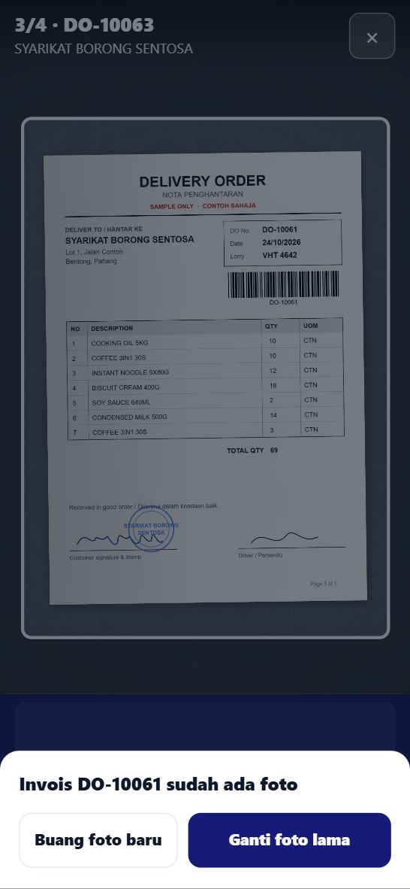
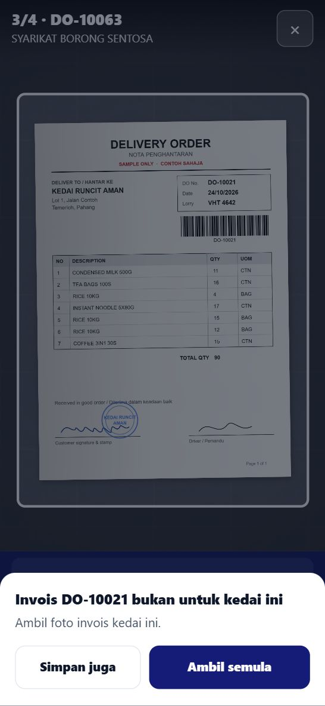
Tanda ? pada foto
Kod bar tidak dapat dibaca (contoh kotor, terlipat atau tertutup jari). Foto itu tetap disimpan, dengan tanda ? di bawahnya. Tekan ?, kemudian pilih nombor invois yang betul di Foto ini untuk invois mana?. Invois bertanda ✓ kod bar sudah ada foto yang dibaca daripada kod bar.
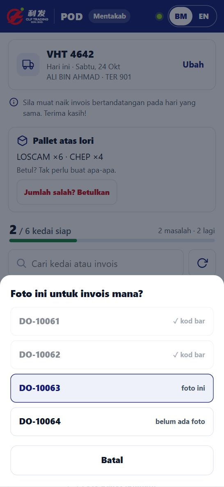
AI semak foto tanpa kod bar
Kod bar tidak dapat dibaca? Borang menghantar foto itu kepada AI, yang membaca nombor invois, nama kedai dan jumlah. Anda boleh terus ambil foto seterusnya.
- Semasa AI membaca: … di bawah gambar kecil (beberapa saat).
- Betul: nombor invois keluar di bawah gambar kecil. Jika foto itu invois lain kedai ini, borang alihkan sendiri ke invois yang betul.
- ! merah: foto ini invois kedai lain, invois yang sudah ada foto, atau invois yang tidak ditanda. Mesej merah keluar di atas skrin, juga semasa kamera dibuka.
- ! kuning: foto kurang jelas, nombor invois tidak dapat dibaca.
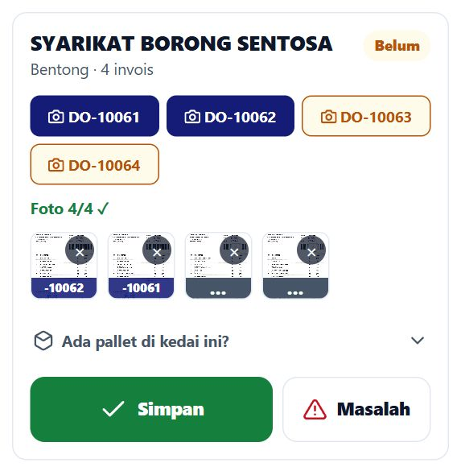
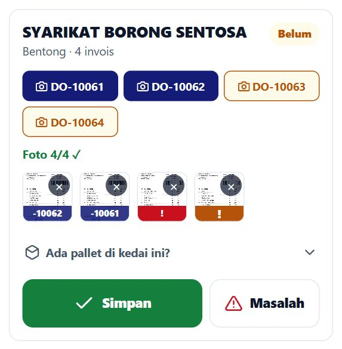
Tekan ! untuk lihat sebabnya, kemudian Buang foto atau simpan foto itu.
Semasa Simpan, borang bertanya untuk setiap foto bertanda !:
- Ambil semula: pilihan biasa. Foto itu dibuang. Ambil foto invois yang betul.
- Simpan juga (merah) atau Simpan begini (kuning): hanya jika anda pasti foto itu betul. Foto itu ditanda untuk pejabat.
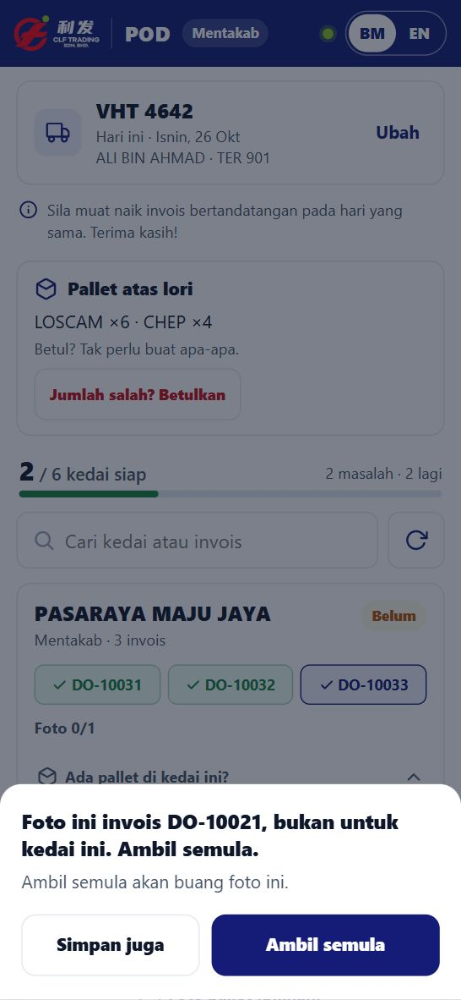
Jika AI belum selesai semasa anda tekan Simpan, borang tulis Menyemak foto… sekejap. Tiada liputan? Foto kekal dengan tanda ?, dan pejabat menyemaknya kemudian.
Foto bertanda merah = foto untuk invois yang tidak bertanda ✓. Tanda semula invois itu, atau buang foto itu (×). Simpan hanya boleh bila setiap invois ada fotonya sendiri: Setiap invois perlu fotonya sendiri. Semak foto bertanda merah.
7Pallet di kedai
Ada pallet diberi atau diambil di kedai ini? Isi sebelum tekan Simpan. Pallet dihantar bersama Simpan.
- Tekan Ada pallet di kedai ini?
- Pilih jenis pallet.
- Beri = berapa pallet anda tinggalkan di kedai. Ambil = berapa pallet kosong anda ambil balik.
- Foto pallet (pilihan): digalakkan, sebagai bukti.
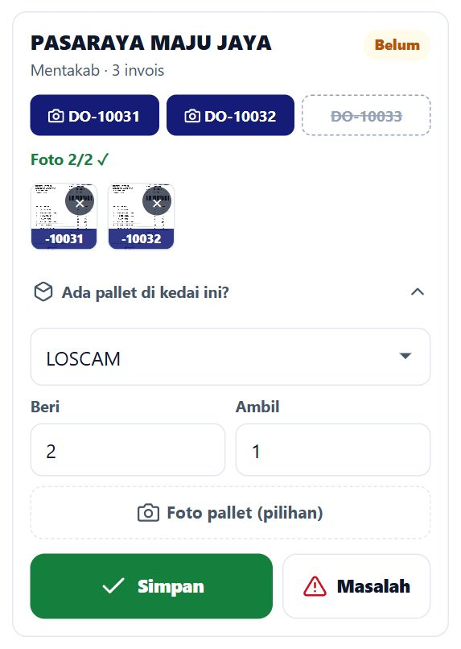
Selepas Simpan: mesej hijau Pallet direkod. Jika keluar mesej merah Pallet TIDAK direkod, POD anda tetap sudah disimpan. Beritahu pejabat jumlah pallet.
8Simpan
Butang hijau Simpan hanya keluar bila bilangan foto sama dengan bilangan invois (contoh Foto 2/2 ✓).
- Tekan Simpan.
- Skrin biru Menyimpan… (kemudian Mengesahkan…). Jangan tutup borang.
- Siap: kedai bertanda Dihantar dan pindah ke bawah senarai.
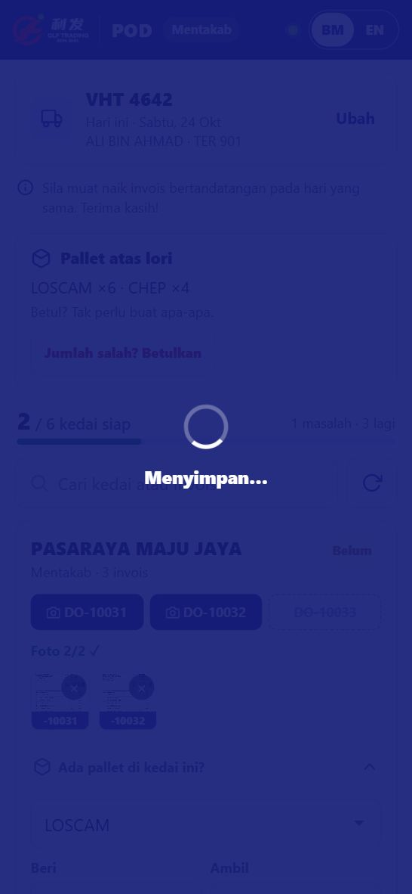
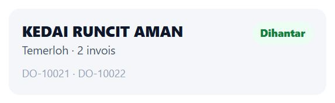
Belum disahkan
Kadang-kadang liputan hilang selepas foto dihantar, dan telefon tidak dapat pengesahan. Kedai itu tidak akan bertanda Dihantar. Ia bertanda Belum disahkan dengan nota Simpanan belum disahkan. Foto masih ada. Tekan Semak.
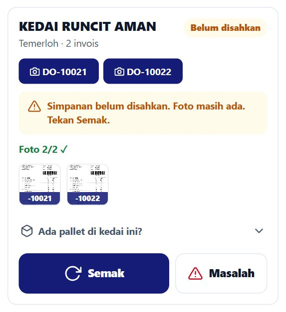
- Foto anda masih disimpan dalam borang. Jangan ambil foto semula.
- Bila ada liputan, tekan Semak.
- Jika disahkan, kedai bertukar Dihantar.
- Jika tertulis Masih belum disahkan, tunggu liputan dan tekan Simpan semula. Foto yang sama dihantar semula. Tak perlu ambil foto baharu.
Hanya kedai bertanda Dihantar sudah selesai. Jangan tutup atau muat semula borang selagi ada kedai Belum disahkan atau foto yang belum disimpan. Foto itu ada dalam borang sahaja.
Simpan gagal
Jika keluar mesej TIDAK disimpan! atau Simpan gagal, foto anda masih ada. Cari liputan dan tekan Simpan semula.
Sebahagian invois sahaja dihantar
Contoh: 3 invois, hanya 2 dihantar. Tekan nombor invois yang tidak dihantar (bergaris), ambil 2 foto, tekan Simpan. Dua invois jadi hijau. Invois yang tinggal masih perlu diselesaikan: hantar kemudian, atau tekan Masalah dan pilih sebab.
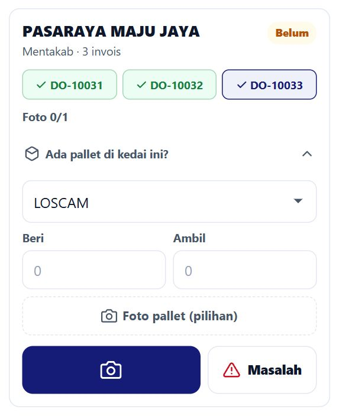
9Masalah: tidak dapat hantar
- Tekan Masalah pada kad kedai.
- Tekan Foto bukti. Ambil gambar kedai atau masalah (contoh kedai tutup). Kamera ini tiada bingkai: tekan butang bulat.
- Pilih sebab (lihat jadual).
- Borang bertanya dahulu, contoh: Tandakan 1 invois sebagai “Kedai tutup”? Tekan Ya, tandakan atau Batal.
- Kedai bertanda merah dengan sebabnya.
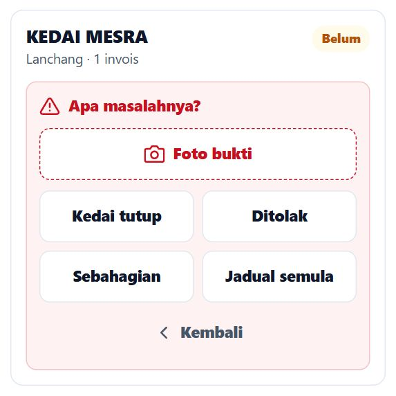
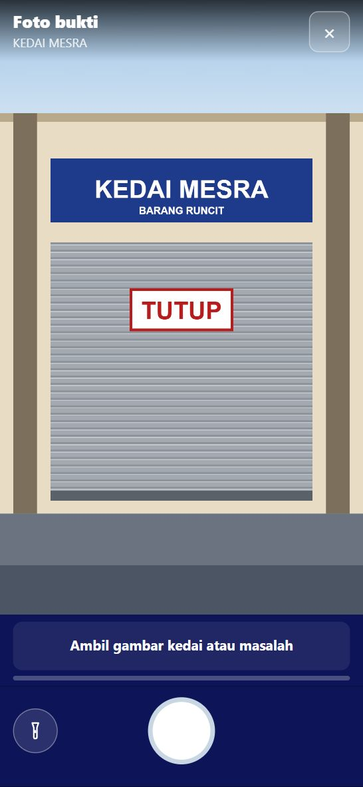
| Sebab | Bila guna |
|---|---|
| Kedai tutup | Kedai tutup, atau tiada orang untuk terima. |
| Ditolak | Pelanggan tidak mahu terima barang. |
| Sebahagian | Pelanggan terima sebahagian barang sahaja. Ambil foto bukti invois itu dan beritahu pejabat apa yang kurang. |
| Jadual semula | Barang akan dihantar hari lain. |
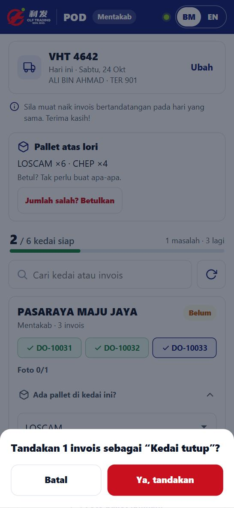
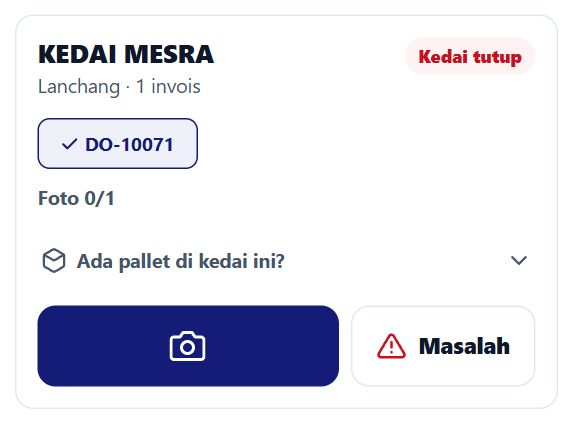
- Kembali = keluar tanpa menandakan apa-apa.
- Selalu ambil Foto bukti. Tanpa foto, borang menunjukkan nota merah Tiada foto bukti.
- Masalah menandakan semua invois kedai itu yang belum dihantar. Jika sebahagian invois dihantar, Simpan invois itu dahulu (bahagian 8), kemudian tekan Masalah untuk yang tinggal.
- Jika keluar mesej tidak disimpan atau belum disahkan, foto bukti masih ada. Cari liputan dan pilih sebab sekali lagi.
10Soalan lazim
Kamera tidak dibuka
Bila telefon bertanya, tekan Allow / Benarkan untuk kamera. Jika kamera disekat, borang menunjukkan mesej Kamera tidak dapat dibuka di sini… Tekan butang kamera sekali lagi: kamera telefon dibuka dan anda boleh terus bekerja.
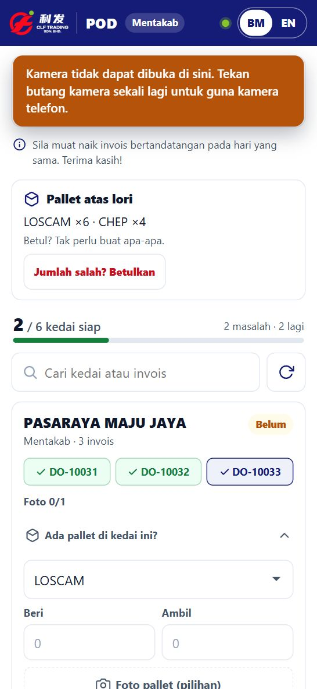
Mahu guna kamera borang semula? Benarkan kamera dalam tetapan laman (ikon di sebelah alamat laman, kemudian Kamera, Benarkan). Kemudian buka borang semula, selepas semua kedai disimpan.
Kamera tertulis Kamera tidak respon? Tekan × dan tekan butang kamera semula.
Senarai tidak keluar
Senarai penghantaran tidak dapat dimuat sekarang bermaksud masalah sambungan, bukan pesanan hilang. Cari liputan, kemudian tekan Tekan untuk cuba lagi.
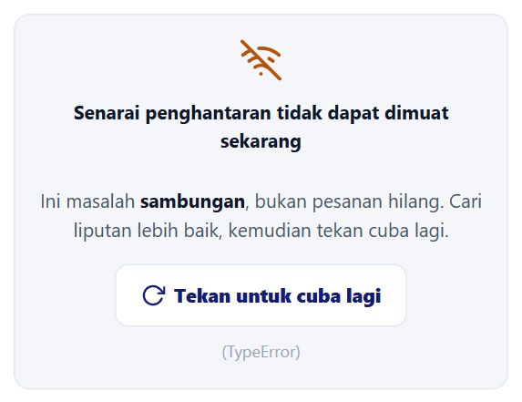
Tiada senarai untuk lori ini
Tiada senarai penghantaran untuk lori ini: semak nombor lori dan tarikh. Jika kedua-duanya betul, minta pejabat semak pesanan.
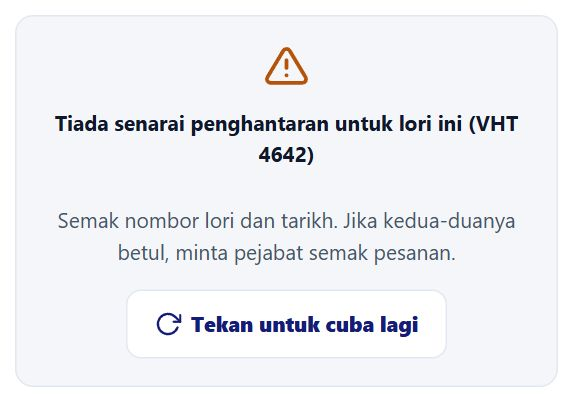
Tarikh salah
Tarikh berwarna oren = bukan hari ini. Tekan Ubah, betulkan tarikh, kemudian tekan Siap.
Foto tidak jelas
Cari cahaya yang cukup (atau tekan lampu suluh), elak silau, letak kertas rata dan pegang telefon stabil. Selepas 3 kali, Hantar juga boleh digunakan (lihat bahagian 5).
Pallet TIDAK direkod
POD anda sudah disimpan. Beritahu pejabat jumlah pallet yang diberi atau diambil.
Tersalah tanda Masalah, atau kedai tiada dalam senarai
Hubungi pejabat.
11Peraturan penting
Sila muat naik invois bertandatangan pada hari yang sama. Terima kasih! Hantar di setiap kedai, semasa anda di sana. Jangan tunggu hujung hari.
- Tandatangan dan cop dahulu, kemudian foto.
- 1 invois = 1 foto. Seluruh muka surat dalam bingkai, kod bar jelas.
- Isi pallet sebelum tekan Simpan.
- Tunggu sehingga kedai bertanda Dihantar. Jika Belum disahkan, tekan Semak bila ada liputan. Jangan ambil foto semula.
- Jangan tutup borang semasa skrin Menyimpan… keluar. Selesaikan satu kedai sebelum buka aplikasi lain.
- Tidak dapat hantar? Tekan Masalah, ambil foto bukti dan pilih sebab.
- Kedai tiada dalam senarai? Minta pejabat tambah.